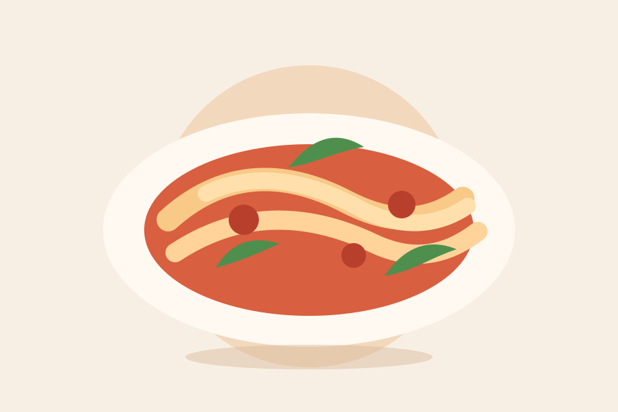

Recipe
Creamy Tomato Pasta
This vegetarian pasta uses crushed tomatoes, a splash of cream, and fresh basil for a mellow sauce that coats every bite.
Instructions
- Bring a large pot of salted water to a boil.
- Cook the pasta until just tender, then reserve 1/2 cup pasta water before draining.
- Warm olive oil in a large pan over medium heat.
- Add the garlic and cook for about 30 seconds, stirring so it does not brown.
- Add crushed tomatoes, salt, and black pepper. Simmer for 10 minutes.
- Lower the heat and stir in the cream until the sauce looks smooth.
- Add the drained pasta and toss until evenly coated.
- Loosen the sauce with reserved pasta water, 1 tablespoon at a time, if needed.
- Finish with basil and optional cheese before serving warm.
Optional Substitutions
- Use unsweetened oat cream instead of heavy cream.
- Add spinach during the final 2 minutes of cooking for extra greens.
- Skip the cheese or use a vegetarian hard cheese if preferred.
Serving Suggestions
Serve with a crisp green salad, roasted vegetables, or warm bread. A little extra basil on top keeps the dish fresh.
Storage Guidance
Store cooled leftovers in a covered container in the refrigerator for up to 3 days. Reheat gently with a splash of water to loosen the sauce.
Nutrition Note
Nutrition will vary based on the pasta, cream, and toppings used. This recipe is provided for general cooking practice, not dietary or medical advice.